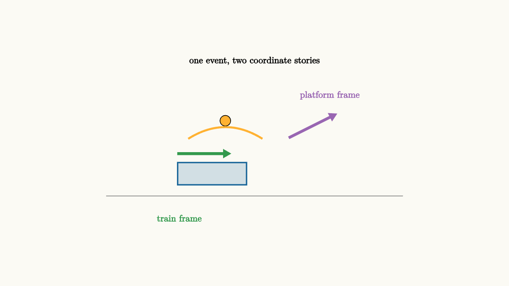

Frames Change The Story
A passenger on a train tosses a ball straight up. To the passenger, the ball rises and falls into the same hand. To someone standing on the platform, the ball follows a forward-moving arc. Both observers describe the same event. They use different coordinates.
Mechanics always begins with a frame of reference. A position like $x=3$ meters means little until we know the origin and axes. A velocity means how position changes in a chosen frame.
For two frames moving at constant relative velocity $u$ along the $x$ direction, the Galilean transformation is
and
Velocities transform by subtracting the frame speed:
Accelerations are the same when $u$ is constant:
That last equation is why Newton's laws keep the same form in inertial frames.

source
background = [0.985, 0.98, 0.955, 1]
camera = Camera(4.8b)
mesh diagram = block {
. stroke{GRAY, 1} Line(start: [-2.8, -1.0, 0], end: [2.8, -1.0, 0])
. fill{alpha{0.18} BLUE} stroke{BLUE, 2} center{[-0.8, -0.58, 0]} Rect([1.3, 0.42])
. fill{ORANGE} center{[-0.55, 0.42, 0]} Circle(0.1)
. stroke{ORANGE, 3} ExplicitFunc(|x| -0.55 + 0.85 - 0.45 * (x + 0.55) * (x + 0.55), [-1.25, 0.15, 100])
. color{GREEN} Arrow(start: [-1.45, -0.2, 0], end: [-0.45, -0.2, 0])
. color{PURPLE} Arrow(start: [0.65, 0.1, 0], end: [1.55, 0.55, 0])
. center{[-1.42, -1.42, 0]} color{GREEN} Text("train frame", 0.62)
. center{[1.42, 0.9, 0]} color{PURPLE} Text("platform frame", 0.62)
. center{[0, 1.55, 0]} Text("one event, two coordinate stories", 0.62)
}
"same toss seen two ways"
play Fade(0.6)The ball's physical path through spacetime is one event sequence. The coordinates assigned to that sequence depend on who is measuring.
Inertial frames agree on forces
An inertial frame moves with constant velocity and does not rotate. In such frames, objects with zero net force move with constant velocity. If a puck glides freely across a smooth floor, every inertial observer sees it move with constant velocity, though they may disagree about which constant velocity.
This agreement is powerful. Suppose one observer sees a cart accelerate at $2\text{ m/s}^2$. Another observer rides past at a steady $5\text{ m/s}$. The second observer subtracts $5\text{ m/s}$ from every velocity, but the change in velocity per second remains $2\text{ m/s}^2$.
Forces connect to acceleration, so the same force law works in both frames.
source
param frame = 0.0
background = [0.985, 0.98, 0.955, 1]
camera = Camera(4.8b)
let TrainScene = |time, frame| block {
let train_x = -1.6 + 2.1 * time - frame
let ball_x = train_x + 0.15
let ball_y = -0.2 + 1.2 * time - 1.0 * time * time
. stroke{GRAY, 1} Line(start: [-2.8, -1.0, 0], end: [2.8, -1.0, 0])
. fill{alpha{0.2} BLUE} stroke{BLUE, 2} center{[train_x, -0.62, 0]} Rect([1.2, 0.4])
. fill{ORANGE} center{[ball_x, ball_y, 0]} Circle(0.1)
. color{GREEN} Arrow(start: [-2.55, -1.35, 0], end: [-1.65, -1.35, 0])
. center{[-2.08, -1.65, 0]} color{GREEN} Text("ground axes", 0.62)
}
"platform description"
mesh title = center{[0, 1.55, 0]} Text("shifting frame changes the coordinates", 0.62)
mesh scene = TrainScene(time: 0.25, frame: $frame)
mesh caption = center{[0, -1.75, 0]} color{DARK_GRAY} Text("x prime = x - ut", 0.7)
play Write(0.8)
"advance the event"
scene = TrainScene(time: 0.7, frame: $frame)
play Lerp(1.2)
"ride with the train"
frame = 1.1
scene = TrainScene(time: 0.7, frame: $frame)
caption = center{[0, -1.75, 0]} color{DARK_GRAY} Text("the same event gets new coordinates", 0.62)
play Lerp(1.0)
"accelerating frames need extra terms"
scene = block {
. stroke{GRAY, 1} Line(start: [-2.7, -1.0, 0], end: [2.7, -1.0, 0])
. fill{alpha{0.2} BLUE} stroke{BLUE, 2} center{[0, -0.55, 0]} Rect([1.35, 0.5])
. fill{ORANGE} center{[-0.2, -0.1, 0]} Circle(0.12)
. color{GREEN} Arrow(start: [0.75, -0.55, 0], end: [1.75, -0.55, 0])
. color{RED} Arrow(start: [-0.2, -0.1, 0], end: [-1.0, -0.1, 0])
. center{[1.95, -0.55, 0]} color{GREEN} Text("car accel", 0.62)
. center{[-1.45, -0.1, 0]} color{RED} Text("inertial force", 0.62)
}
play Trans(1.0)The first three slides are a coordinate shift. The final slide changes the kind of frame. An accelerating frame needs extra terms if we want to keep using Newton's law inside that frame.
Accelerating frames introduce inertial forces
Imagine standing in a bus as it starts forward. You feel thrown backward relative to the bus. In the ground frame, your body tends to keep its original velocity while the bus floor accelerates forward under your feet. In the bus frame, it is convenient to add an inertial force backward so that Newton's second law still balances the observed motion inside the bus.
For a frame accelerating with $\vec a_{\text{frame}}$, the inertial force on mass $m$ is
This force is a bookkeeping device for the accelerating frame. It lets a rider inside the bus describe motion without continually translating back to the ground.
Rotating frames add more terms. The outward-feeling centrifugal term appears in a rotating frame. The sideways Coriolis term appears when an object moves within a rotating frame. Weather systems, long-range projectiles, and rotating space habitats all require this careful accounting.
Center-of-mass frames simplify collisions
Some frame choices make a problem clearer. In a collision, the lab frame may show two objects moving before and after. The center-of-mass frame moves with velocity
In that frame, total momentum is zero. The objects approach, interact, and leave with momenta that still add to zero. Elastic collisions especially become more symmetric in this view.
Frame choice is a strategy. The physics must agree across valid frames, but the algebra can become much easier in one frame than another.
Energy depends on frame
Kinetic energy changes when the velocity changes by a frame shift:
If one observer says a cart moves at $3\text{ m/s}$ and another says it moves at $1\text{ m/s}$, they assign different kinetic energies. This is not a contradiction. Work and energy accounting must be done consistently within the chosen frame.
Momentum also depends on frame, while changes caused by interactions remain constrained by conservation laws once the system and external impulses are defined. A good frame does not erase conservation. It gives the conservation law cleaner coordinates.
The lesson to keep
A reference frame is part of every mechanics statement. Positions and velocities are frame-dependent. Accelerations agree across frames moving at constant relative velocity. Newton's laws keep their usual form in inertial frames.
When the frame accelerates or rotates, add the appropriate inertial terms or change back to an inertial frame. When a problem looks messy, consider a frame attached to the ground, a moving object, or the center of mass. The event is the same, but the story can become much easier to tell from the right seat.